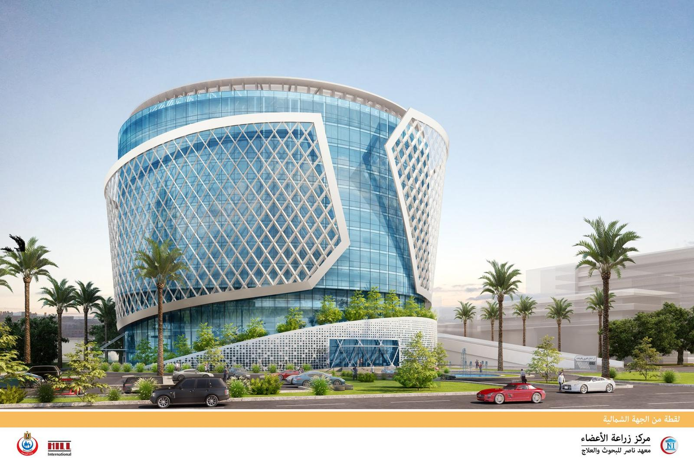
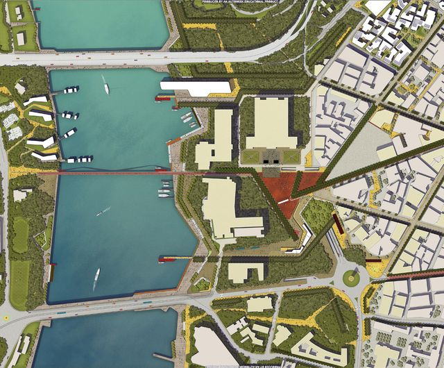
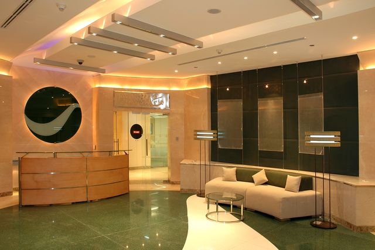

Organ Transplant Centre, Nasser Institute for Research and Treatment
Healthcare project · Greater Cairo, Egypt
Organ transplant centre for the Nasser Institute for Research and Treatment in Greater Cairo.
Partners

Client
Nasser Institute for Research and Treatment
More from Cairo

Downtown Cairo RegenerationCairo · 2012 Olympic Plaza Tower, MaadiMaadi, Cairo · 2008
Olympic Plaza Tower, MaadiMaadi, Cairo · 2008
Rotana Offices and Studios, Nile PlazaGarden City, Cairo · 20052000Faculty of Medicine Expansion Project, Ain Shams University (Second Stage)Abbassiya, Cairo · 20001994Faculty of Medicine, Ain Shams University: Concept Master Plan (Phase 1)Abbassiya, Cairo · 1994 Katameya Dunes VillasKatameya, New Cairo
Katameya Dunes VillasKatameya, New Cairo